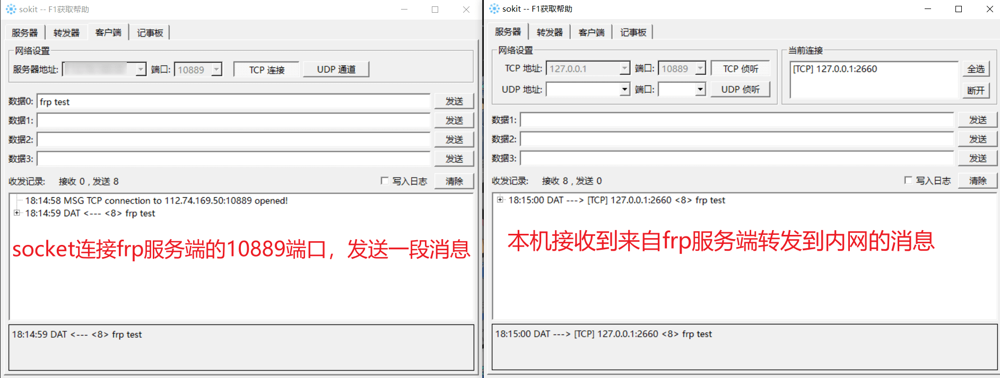

如何使用 frp 内网穿透
frp 是一个基于 Go 语言开发的专注于内网穿透的高性能的反向代理应用，支持 TCP、UDP、HTTP、HTTPS 等多种协议。可以将内网服务以安全、便捷的方式通过具有公网 IP 节点的中转暴露到公网。frp 上手难度低，配置起来并不算困难。
Github：https://github.com/fatedier/frp
通过在具有公网 IP 的节点上部署 frp 服务端，可以轻松地将内网服务穿透到公网。前提是，内网能访问外网。而不是像特殊单位的纯内网环境，不允许访问外网。
举几个经典的应用场景：
- 开发人员在家办公，需要连接公司内网，进服务器 shell 调试 / 部署；
- 开发人员联调时，需要给外网提供部署在本地的 web 服务；
- 出差过程中，需要连接公司内网，登录内部系统审批流程；
- 访问家庭 NAS 服务器。
本文以服务端 centos7，客户端 windows 为例进行演示说明。
一、下载最新版本的 frp 到服务器
下载页面：https://github.com/fatedier/frp/releases
根据自己的服务器架构，选择对应发行版本的文件下载。一般都是 x86 架构，下 linux_amd64.tar.gz 结尾的版本就可以。
当前最新版本是：0.34.3。
下载到 /root 目录：
cd /root && wget https://github.com/fatedier/frp/releases/download/v0.34.3/frp_0.34.3_linux_amd64.tar.gz
解压到 /usr/local 下，重命名文件夹为 frp：
tar -zxvf frp_0.34.3_linux_amd64.tar.gz --directory=/usr/local/ && mv frp_0.34.3_linux_amd64 frp
二、配置 frp systemd 服务
#创建systemd服务文件
vim /usr/lib/systemd/system/frp.service
#写入以下内容，退出并保存
[Unit]
Description=The nginx HTTP and reverse proxy server
After=network.target remote-fs.target nss-lookup.target
[Service]
Type=simple
ExecStart=/usr/local/frp/frps -c /usr/local/frp/frps.ini
KillSignal=SIGQUIT
TimeoutStopSec=5
KillMode=process
PrivateTmp=true
StandardOutput=syslog
StandardError=inherit
[Install]
WantedBy=multi-user.target
重载配置文件，使之立即生效。
systemctl daemon-reload
systemctl 命令：
systemctl start frp #启动
systemctl stop frp #关闭
systemctl restart frp #重启
systemctl status frp #当前状态
systemctl enable frp #开机自启动
systemctl disable frp #取消开机自启动
三、修改 frp 服务端配置
#修改frp服务端配置文件
vim /usr/local/frp/frps.ini
#按照以下内容配置，保存并退出
[common]
bind_port = 7000 #frp服务端端口
vhost_http_port = 8080 #http访问端口
[web] #[]中的内容可以自己随便起，但不允许重复，只是起备注的功能而已。
type = http #服务类型，可以设为http,https
custom_domains = xxx.keyboardman.fun #公网域名，记得域名的A记录要解析到外网主机的IP。
auth_token = 123456789
[ssh] #监听6000端口，外网SSH连接内网机器时，填写的IP即为frp服务端的IP和此处设定的6000端口。
listen_port = 6000
auth_token = 123456789
[tcp] #监听10889端口，转发消息给客户端。
listen_port = 10889
auth_token = 123456789
修改完 frp 服务端的配置文件后，需要检查服务器端口是否开放，上面的配置文件用到了 6000/7000/8080/10089 这 4 个端口。
重启 frp 服务端
systemctl restart frp
web 配置项用于向外网提供本地 web 服务、ssh 配置项用于连接本地虚拟机的 shell、tcp 配置项用于转发 10889 端口消息给本机。
需要注意的是，以上配置中，web/ssh/tcp 的字眼并非是标准语法，而是我起的一个备注而已。
四、下载最新版本的 frp 到本机
同样的，在 Github 的 release 页面下载对应版本的 frp：https://github.com/fatedier/frp/releases
本机是 windows，因此下载 windows_amd64.zip 版本即可。
下载地址：https://github.com/fatedier/frp/releases/download/v0.34.3/frp_0.34.3_windows_amd64.zip
五、配置客户端参数
解压后进入目录，修改 frpc.ini 为如下内容：
[common]
server_addr = xx.xx.xx.xx #部署frp服务端的IP地址
server_port = 7000 #frp服务端的端口
privilege_token = 123456789 #验证token/密码
[web]
type = http
local_ip = 127.0.0.1
local_port = 5500 #web服务本地端口
remote_port = 8080 #frp服务端HTTP端口
custom_domains = xxx.keyboardman.fun #反代域名
#将远程6000端口的tcp流量转发到本地的22端口
[ssh]
type = tcp
local_ip = 127.0.0.1
local_port = 22
remote_port = 6000
#将远程10889端口的tcp流量转发到本地的10889端口
[tcp]
type = tcp
local_ip = 127.0.0.1
local_port = 10889
remote_port = 10889
此处的 web 项配置意为：frp 服务端会把访问 xxx.keyboardman.fun:8080 端口的请求代理至本地的 5500 端口。
ssh 项：将服务端 6000 端口的 tcp 流量转发至本地的 22 端口
tcp 项：将服务端 10889 端口的 tcp 流量转发至本地的 10889 端口
六、运行本机上运行 frp 客户端并测试效果
打开 cmd，cd 到 frp 的目录下，frpc.exe 运行客户端
1）web 服务访问测试
访问 http://xxx.keyboardman.fun:8080，frp 服务端会将请求代理至本地的 5500 端口。
2）socket 消息测试

SSH 测试就不演示了，在本机上有搭建 VMware，使用 nat 转发即可把本机的 22 端口 tcp 流量转发到目标虚拟机的 22 端口去，也就是远程 SSH 连接公司内网的应用场景了。
远程连接时，IP 填 frp 服务端所在的 IP，端口填 6000，可以回头看一下上文 frp 服务端的配置，其中 ssh 项的监听端口我选择的就是 6000。